Welcome to Sarasota Darts
Sarasota Darts is your one-stop hub for everything darts in the Sarasota area. Whether you're looking for steel tip or soft tip leagues, bars that host games, local shops, or event information — we've got you covered.
Our leagues bring together new players and seasoned competitors across Sarasota County. We also promote blind draws, highlight tournament winners, and celebrate the sponsors who make it all possible.
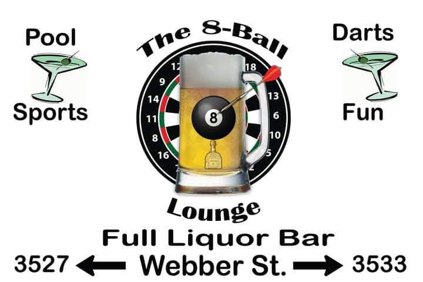
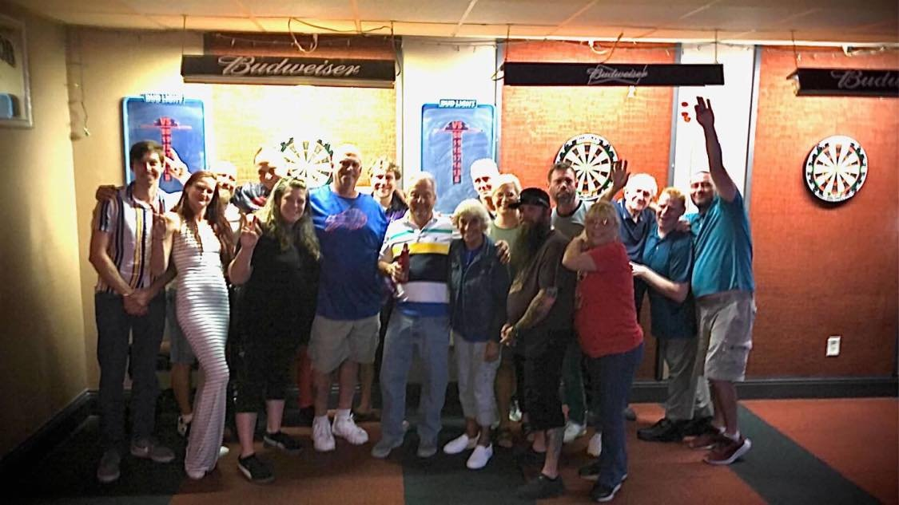
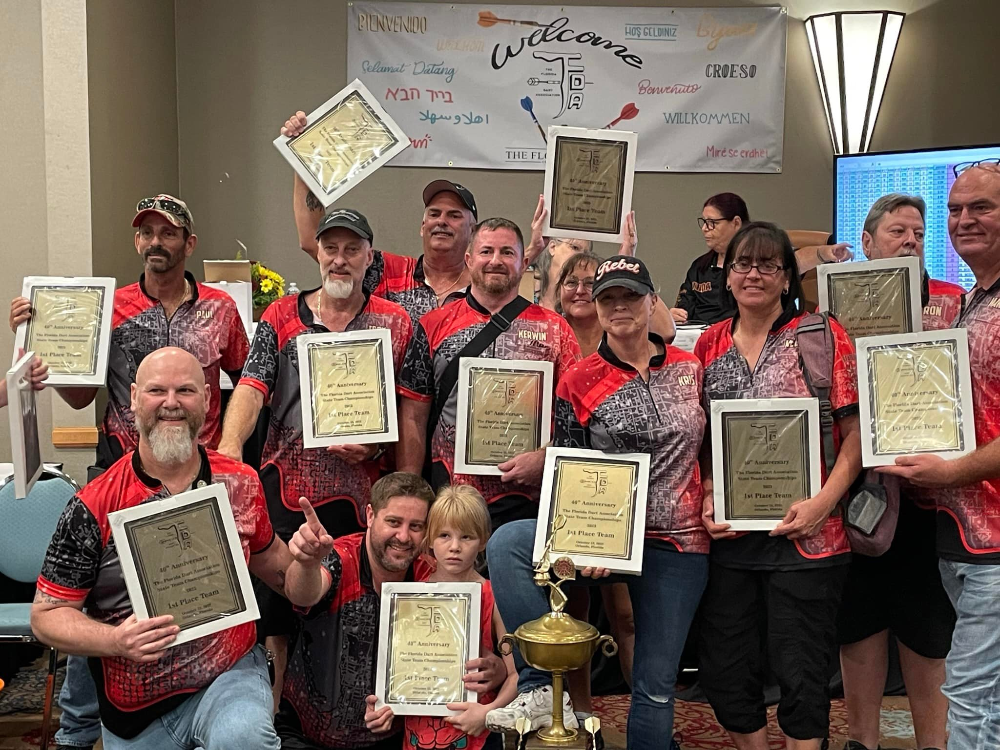
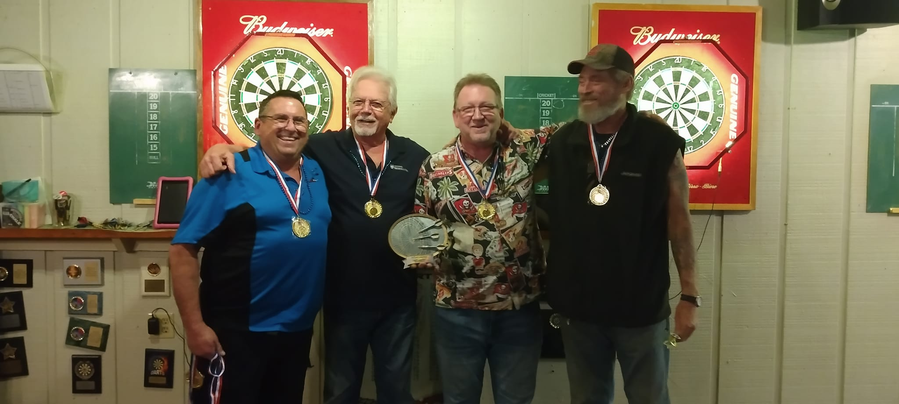
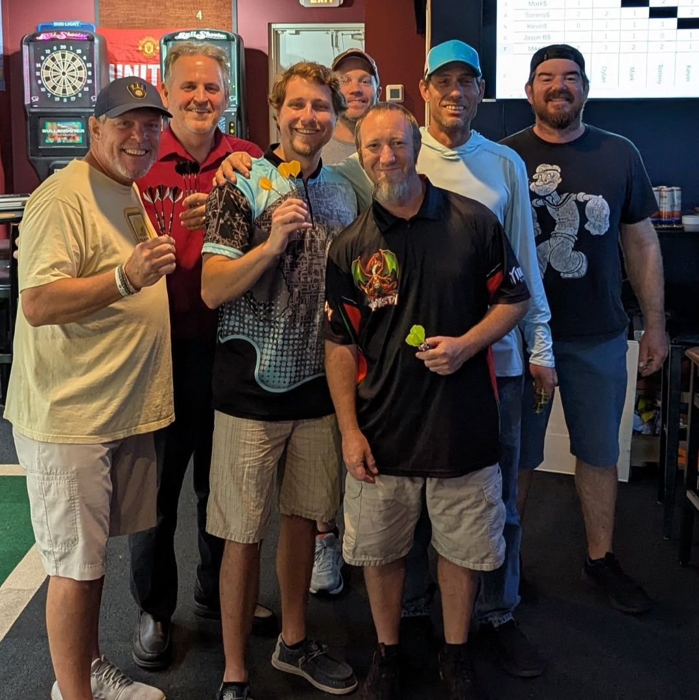
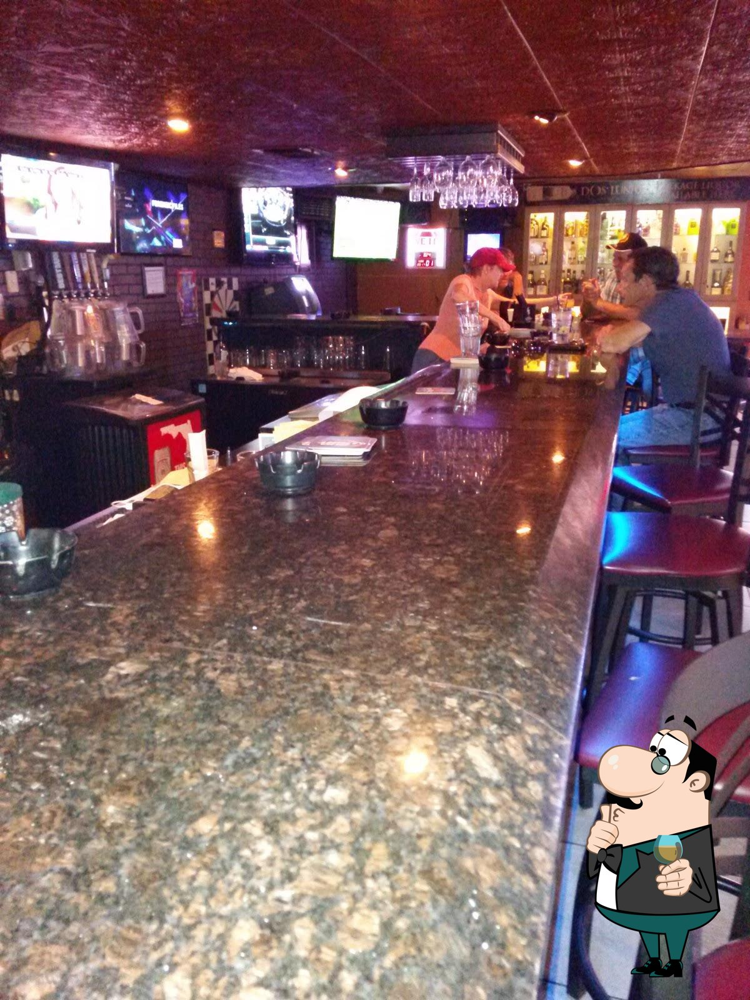
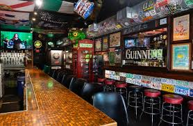
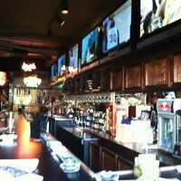
 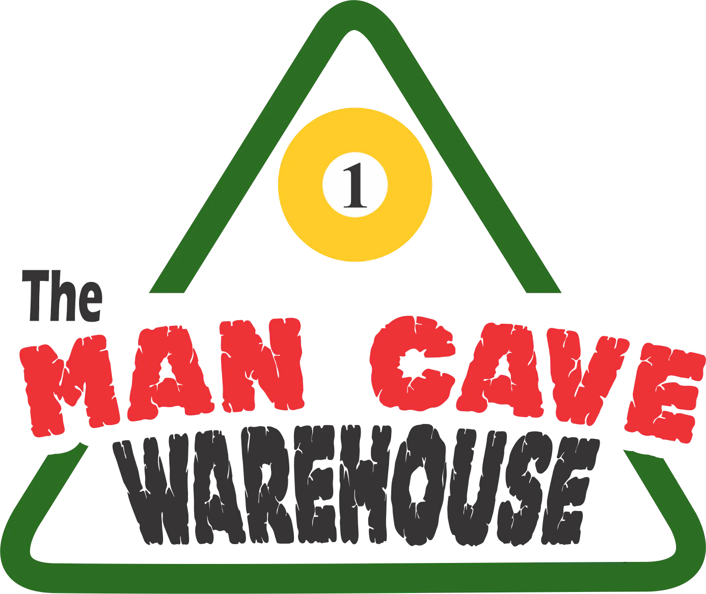
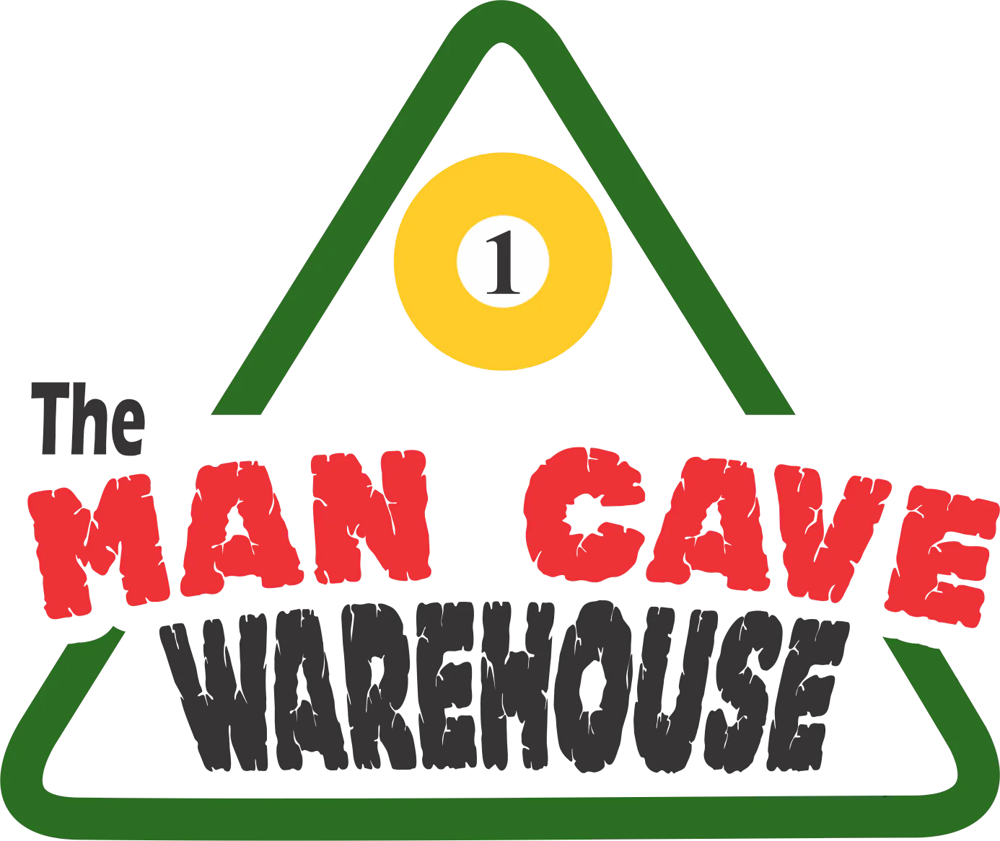
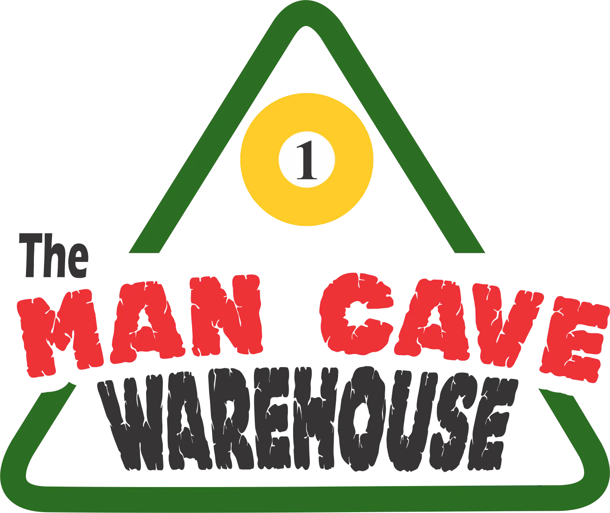